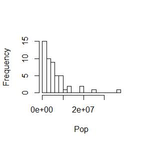
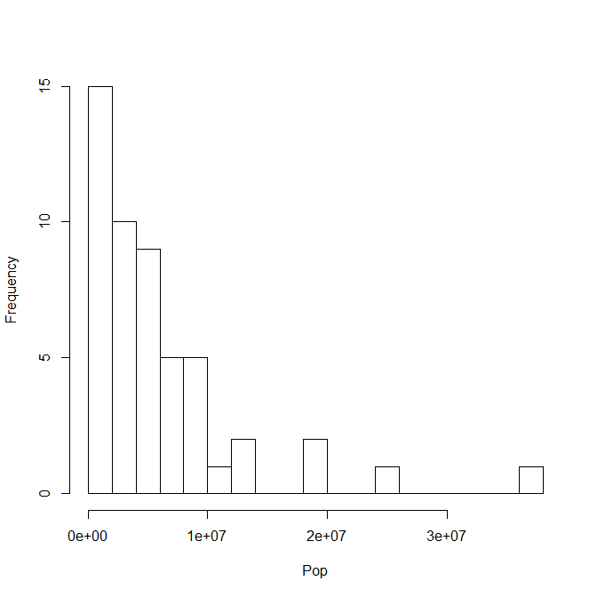
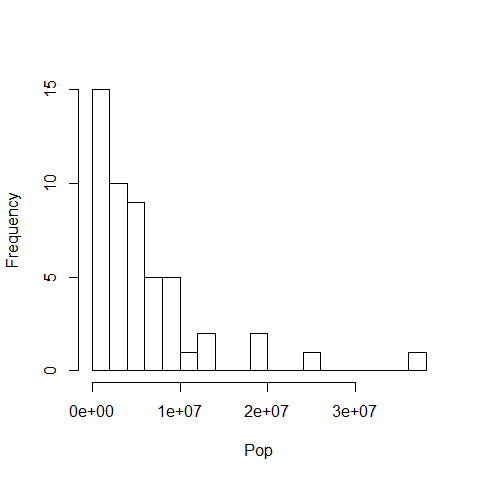
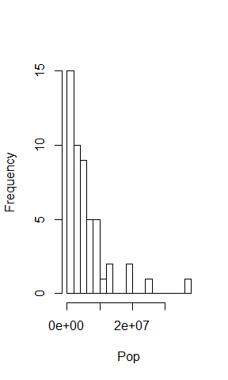
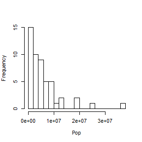
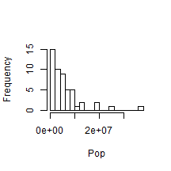
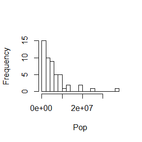
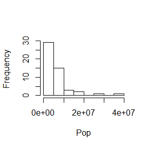

Foreword
- Output options: the ‘tango’ syntax and the ‘readable’ theme.
- Code snippets and results.
Preliminary Options¶
Usually, the following code is set to FALSE (not showing in a report).
These are the general options. Code and plot chunks overrule the general
options.
knitr::opts_chunk$set(echo=TRUE, eval=TRUE, fig.height=3, fig.width=3)
Chunks¶
Naming a chunk is including it in the document outline. The outline is a
navigation tool to jump though the document.
Inputting Data¶
The dataset comes from the US Census
Bureau.
On their website, open Excel file ‘NST-EST2011-02’ about the annual
estimates of the resident population.
The data have become an object: a data frame. Check it out, and add
column names:
head(USstatePops,3)
## V1 V2
## 1 Alabama 4779735
## 2 Alaska 710231
## 3 Arizona 6392013
colnames(USstatePops) <- c('State', 'Pop')
head(USstatePops, 3)
## State Pop
## 1 Alabama 4779735
## 2 Alaska 710231
## 3 Arizona 6392013
Check out the data frame:
str(USstatePops)
## 'data.frame': 51 obs. of 2 variables:
## $ State: Factor w/ 51 levels "Alabama","Alaska",..: 1 2 3 4 5 6 7 8 9 10 ...
## $ Pop : int 4779735 710231 6392013 2915921 37253956 5029196 3574097 897934 601723 18801311 ...
The states should be strings, not factors.
Extract numbers or strings without any loss from a factor structure:
# make a copy for safety
USstatePops2 <- USstatePops
USstatePops2$State <- as.character(levels(USstatePops2$State))
Check out the new data frame:
str(USstatePops2)
## 'data.frame': 51 obs. of 2 variables:
## $ State: chr "Alabama" "Alaska" "Arizona" "Arkansas" ...
## $ Pop : int 4779735 710231 6392013 2915921 37253956 5029196 3574097 897934 601723 18801311 ...
head(USstatePops2, 3)
## State Pop
## 1 Alabama 4779735
## 2 Alaska 710231
## 3 Arizona 6392013
Formatting Code Chunks¶
eval=TRUE; show the results (default).¶
mean(USstatePops2$Pop)
## [1] 6053834
eval=FALSE; or no results.¶
mean(USstatePops2$Pop)
results='markup'; show split code/results/code/results (default).¶
mean(USstatePops2$Pop)
## [1] 6053834
median(USstatePops2$Pop)
## [1] 4339362
eval='asis'; show ‘unboxed’ results.¶
mean(USstatePops2$Pop)
6053834
median(USstatePops2$Pop)
4339362
eval='hide'; show code only.¶
mean(USstatePops2$Pop)
median(USstatePops2$Pop)
eval='hold'; show code block/results block.¶
mean(USstatePops2$Pop)
median(USstatePops2$Pop)
## [1] 6053834
## [1] 4339362
echo=TRUE; show the code (default).¶
mean(USstatePops2$Pop)
## [1] 6053834
median(USstatePops2$Pop)
## [1] 4339362
echo=FALSE; or no code.¶
## [1] 6053834
## [1] 4339362
warning, error, message are set to TRUE by default. They can be set of FALSE when running a library() code to avoid polluting the report.¶
{r, warning=TRUE, error=TRUE, message=TRUE}
tidy=TRUE/FALSE; with the formatR and shiny packages (you manage spaces and indents) (FALSE by default).¶
{r, tidy=TRUE}
cache=TRUE/FALSE; cache the results (FALSE by default).¶
Can be resused in future knits since it creates a subdir (the
‘cache’) with a R workspace, .rdb and .rdx files.
{r, cache=TRUE}
The cache.path='cache/' can be changed. See cache-comments,
cache.lazy, cache.vars, autodep, dependson.
comment='##'; the comments in results (by default).¶
mean(USstatePops2$Pop)
## [1] 6053834
comment='#'; the new comments.¶
mean(USstatePops2$Pop)
# [1] 6053834
code chunk {r}.¶
list <- c(1, 2, 3)
list
## [1] 1 2 3
code chunk {code=NULL}.¶
list <- c(1, 2, 3)
list
code chunk {text}.¶
list <- c(1, 2, 3)
list
code chunk {python}.¶
list = [1, 2, 3]
print(list)
Set up the new language first.
hightlight=TRUE; hightlight the code (default).¶
mean(USstatePops2$Pop)
## [1] 6053834
hightlight=FALSE; or not.¶
mean(USstatePops2$Pop)
## [1] 6053834
prompt=TRUE; add > before the code.¶
> mean(USstatePops2$Pop)
## [1] 6053834
prompt=FALSE; or not (default).¶
mean(USstatePops2$Pop)
## [1] 6053834
strip.white=TRUE; remove white space from the code (default).¶
mean(USstatePops2$Pop)
## [1] 6053834
strip.white=FALSE; or not.¶
mean(USstatePops2$Pop)
## [1] 6053834
Formatting Plot Chunk¶
Prints the plots in the .html report and and creates a subdir with the
plot files (the references).
fig.path='figure/'; new file path for this chunk.¶
Otherwise, the path is set in the general options.
hist(USstatePops2$Pop, breaks = 20, main = '', xlab = 'Pop')

The device prints .png files by default.¶
It can be changed to other formats.
dev='png'.
hist(USstatePops2$Pop, breaks = 20, main = '', xlab = 'Pop')

dev='jpeg'.
hist(USstatePops2$Pop, breaks = 20, main = '', xlab = 'Pop')

dev='pdf'; 'pdf' cannot be printed in the .html report, but only
included in the subdir.
hist(USstatePops2$Pop, breaks = 20, main ='', xlab = 'Pop')

fig.width= , fig.height=; change the box size (=7 by default).¶
hist(USstatePops2$Pop, breaks = 20, main ='', xlab = 'Pop')

fig.width=5, fig.height=5.¶
hist(USstatePops2$Pop, breaks = 20, main ='', xlab = 'Pop')

fig.height=3.¶
hist(USstatePops2$Pop, breaks = 20, main ='', xlab = 'Pop')

fig.width=3.¶
hist(USstatePops2$Pop, breaks = 20, main ='', xlab = 'Pop')

out.height=100, out.width=100; in pixels.¶
hist(USstatePops2$Pop, breaks = 20, main ='', xlab = 'Pop')

resize.height=200, resize.width=200; resize tike graphics for latex, in pixels.¶
hist(USstatePops2$Pop, breaks = 20, main ='', xlab = 'Pop')

sanitize=TRUE; sanitize ‘tike’ graphics for latex.¶
hist(USstatePops2$Pop, breaks = 20, main ='', xlab = 'Pop')

Set the device arguments:¶
dev.args=list(bg='yellow', pointsize=10).
hist(USstatePops2$Pop, breaks = 20, main ='', xlab = 'Pop')

dev.args=list(pointsize=8), fig.height=3.
hist(USstatePops2$Pop, breaks = 20, main ='', xlab = 'Pop')

dots per inch.¶
dpi=72.
hist(USstatePops2$Pop, breaks = 20, main ='', xlab = 'Pop')

dpi=90.
hist(USstatePops2$Pop, breaks = 20, main ='', xlab = 'Pop')

dpi multiplier for .html output on retina screens:¶
fig.retina=1
hist(USstatePops2$Pop, breaks = 20, main ='', xlab = 'Pop')

fig.retina=2; double dpi.
hist(USstatePops2$Pop, breaks = 20, main ='', xlab = 'Pop')

fig.align='left' or fig.align='default'.¶
hist(USstatePops2$Pop, breaks = 20, main ='', xlab = 'Pop')

fig.align='right'.¶
hist(USstatePops2$Pop, breaks = 20, main ='', xlab = 'Pop')

fig.align='center'.¶
hist(USstatePops2$Pop, breaks = 20, main ='', xlab = 'Pop')

Figure captions at the bottom of the plot; figure caption in latex:¶
fig.cap='CAPTION 14'.
hist(USstatePops2$Pop, breaks = 20, main ='', xlab = 'Pop')

See:
fig.lp=''; figure caption prefixfig.scap=''; short figure caption prefix.fig.subcap=''; subcaption.fig.env=''; the latex environment for figures.
Versions¶
fig.keep='high'; merge low-level changes into high-level plots.
hist(USstatePops2$Pop, breaks = 20, main ='', xlab = 'Pop')

See:
fig.keep='all'; keep all plots (low-level changes may produce
new plots).fig.keep='first'/'last'; keep the first/last plot only.fig.keep='none'; discard all plots.
fig.pos='test'; string to be used as the figure position arrangement in latex.¶
hist(USstatePops2$Pop, breaks = 20, main = '', xlab = 'Pop')

Show¶
fig.show='asis'.
hist(USstatePops2$Pop, breaks = 10, main = '', xlab = 'Pop')

hist(USstatePops2$Pop, breaks = 20, main = '', xlab = 'Pop')

fig.show='hold'; display the plots at the very end of the chunk.
hist(USstatePops2$Pop, breaks = 10, main = '', xlab = 'Pop')
hist(USstatePops2$Pop, breaks = 20, main = '', xlab = 'Pop')

See:
fig.show='hide'; generate the plots, but not in the
final document.fig.show='animate'; combine all of the plots created into
an animation. Additional packages and settings are required.